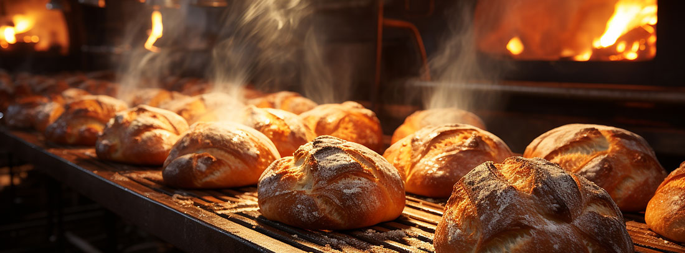

ABOUT CRUMB.
毎日焼きたて。街にインスパイアされたパンを。
Our Story
朝の街角に漂う、焼きたてパンの香り。それがすべての始まりでした。
CRUMB.のはじまりは、店主が自宅の小さなオーブンで焼いた一本のバゲットでした。
「毎日食べたくなる、シンプルで飽きのこないパンをつくりたい。」そんな想いから試行錯誤を重ね、2022年、目黒の路地裏に小さなベーカリーをオープン。
こだわるのは、素材と手間と、食べてくれる人の笑顔。 華やかではなくても、じんわりと記憶に残るパンを届けたい。
開店当初から変わらないその想いが、今も変わらずCRUMB.の毎日に焼き込まれています。

CRAFTMANSHIP
パンづくりは、急がない。
粉と水、塩、酵母。素材はシンプルでも、奥行きは深い。
毎朝、静かに始まる仕込みの時間。生地に触れ、発酵の音に耳を澄まし、焼き上がりの香りを確かめる。
一見何気ないルーティンの中に、パン職人の感覚と経験が息づいています。
CRUMB.のパンは、すべて店内で一つひとつ手づくり。
「飾らないけれど、忘れられない味」を目指して、 日々、五感を研ぎ澄ませながら、ひとつの生地と向き合っています。
素材に向き合い、手間を惜しまず、最後まで丁寧に。 それが、CRUMB.のクラフトマンシップです。
OUR PHILOSOPHY
パンが好き
パンへの情熱
小麦と水、酵母の力を信じて、毎日、まっすぐに向き合っています。おいしいパンで、誰かの一日が少しでも明るくなれば——それが、私たちの原動力です。
心をこめた品質
選び抜いた素材と丁寧な手仕事。 見た目ではなく、本当においしいものを。 私たちは、毎日のパンに誠実でありたいと思っています。
パンを通して、心がつながる。
焼きたての香りが人と人を結び、笑顔と会話が広がっていく。 私たちは、そんな温かな瞬間を届けたいと願っています。